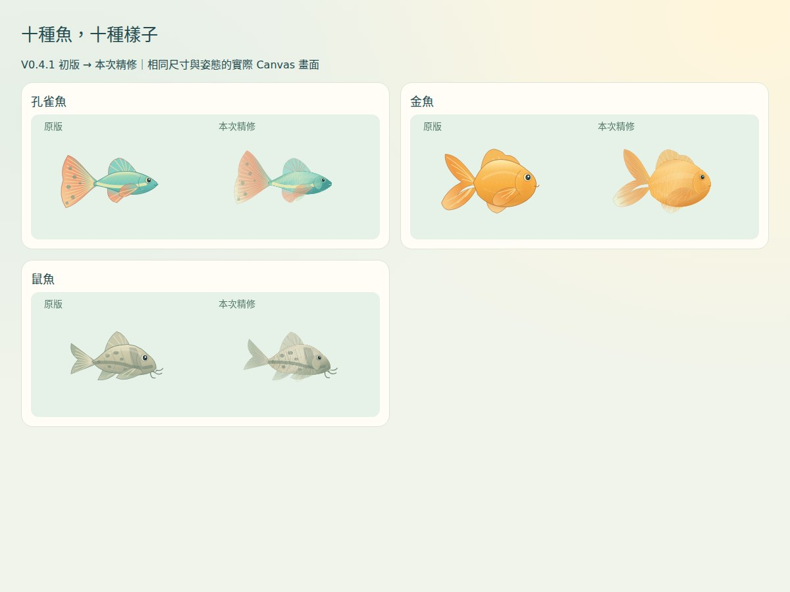

悠悠水族箱 · V0.4.1 精修
更像自己的魚，更清楚的觀察
以下全部為實際程式的瀏覽器畫面，沒有使用未串接的概念圖。十種魚沿用原本的養成、行為與存檔；觀察拆成自己的魚與課本複習。
實際遊戲畫面
新舊比較
外觀比較採用相同 Canvas 尺寸與姿態。前三種代表魚先完成實際遊玩驗證，再延伸到其餘七種。

孔雀魚、金魚、鼠魚：原版 → 精修教材插圖
觀察模式結構
原版將自己的魚縮在上方，下方直接顯示教材；新版先讓自己的魚成為主角，再由大分頁切換到課本複習。
主畫面
平板畫面是 Chromium 的尺寸與觸控模擬；並非實體 iPad 效能量測。完整結果及限制見工程報告。